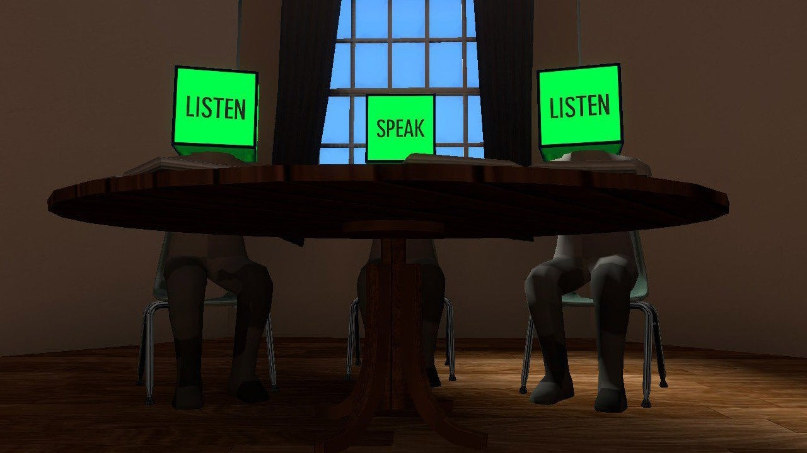

Publishing Information
- Published by: Everything Unlimited Ltd.
- Developed by: Everything Unlimited Ltd.
- Released: Oct 01, 2015
Description
Probably a first, The Beginner's Guide is presented as a guided tour through the work of another developer. This is a metafictional account of Davey Wreden, actual director of the game and co-designer and co-writer of The Stanley Parable (2013).
Similar to that game, The Beginner's Guide can be considered a game about game design and about how players interact with games and, in a way, communicate with game developers. He takes the player through the games of his old friend, Coda, while giving his commentary and interpretations of them, in order to understand why he makes the bizarre, often melancholic games that he makes, and decipher Coda's personality and inner struggles-- and why he stopped developing games altogether.
Game Categories
- Genres: Adventure, Indie
- Perspective: First-Person
Quotes and Reviews
"On the surface, The Beginner’s Guide is a game about game design and critical analysis. Digging deeper, it provides a window into the mind of a man I might not have fully understood otherwise. It does all of this in a way only a video game could. More than anything else, it has caused me a lot of introspection, a feat few games ever achieve." -- destructoid.com
"The Beginner’s Guide poses a number of academic questions around the nature of choice, interactivity, and creativity. While it offers no firm answers, it’s one of the most thought-provoking and ultimately disarming interactive experiences I’ve had all year, and one I won’t easily shake off." -- ign.com